SUPERLATIVES
The Autumn Vacationer
Most Likely to Be on Break Forever
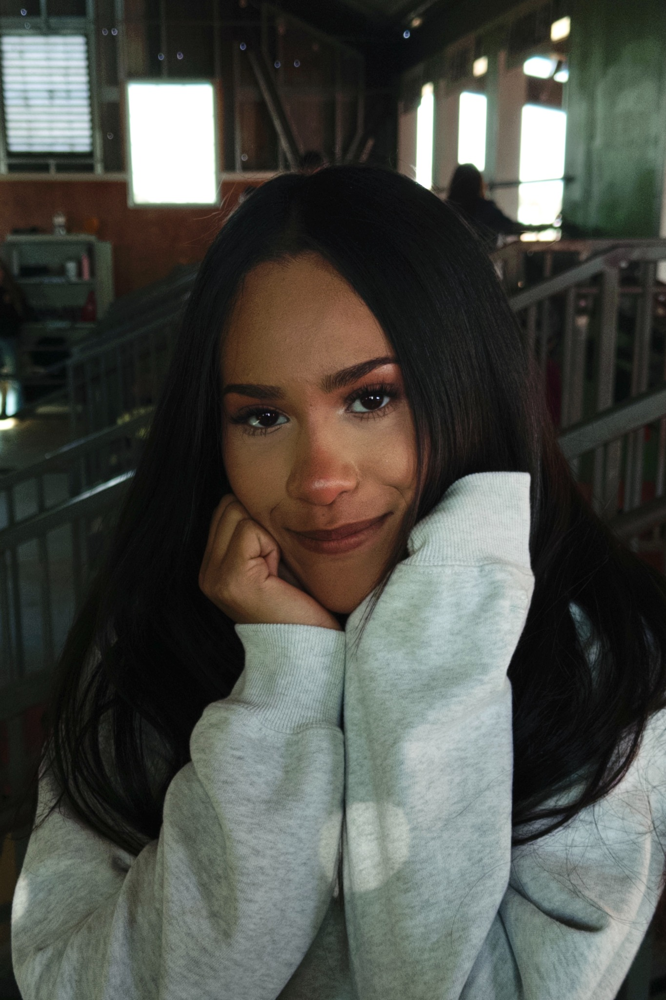
Judith
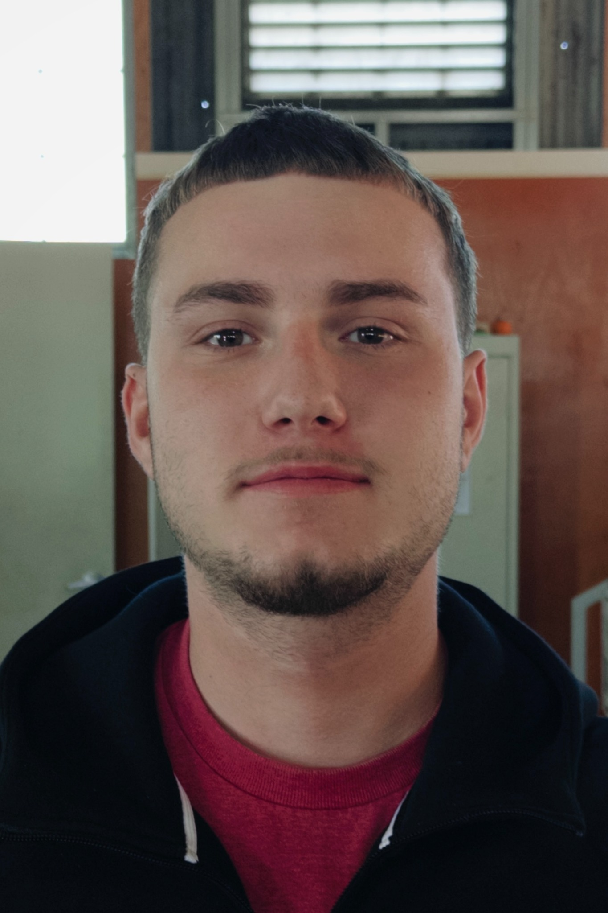
Chaise Kyle
KyleThe Department's Moist Valuable
Most Likely to Get Soaked by Water

Alejandra
The Speed Demon
Fastest Conveyor Worker

Liam B.
The Reason People Show Up
Best Team Energy

Joely
The Accidental Millionaire
Most Likely to Forget to Clock Out
Jacob P.
The Monk
Most Chill to Work With
Caden
The Aura Farmer
Nonchalant King/Queen

Jackson

Evelyn
The Class Clown
Funniest Person at the Raceway
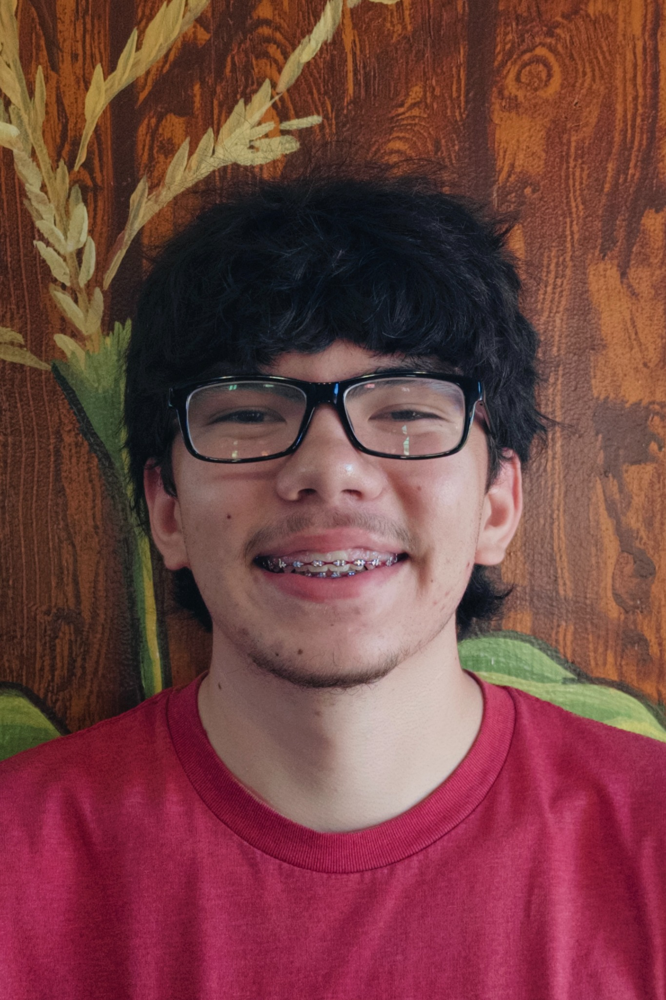
Romeo
The Second Sun
Who Always Has a Good Attitude No Matter What?
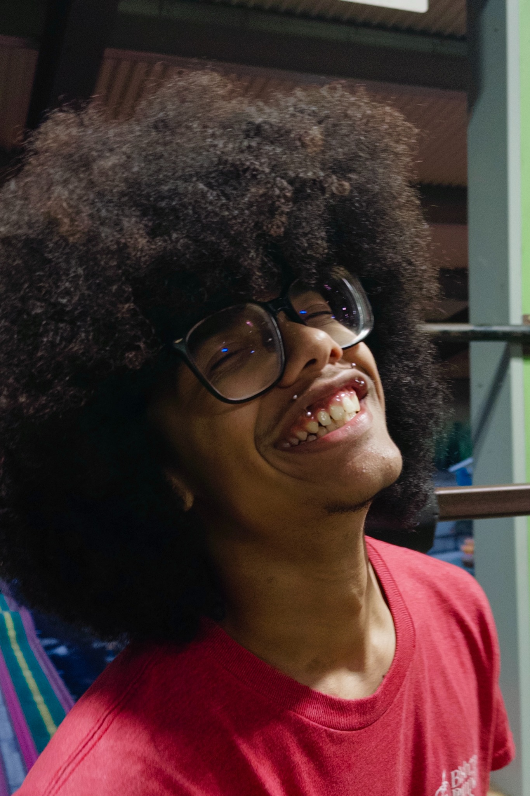
Elyas
The Human Forklift
Could Probably Carry 5 Tubes at Once
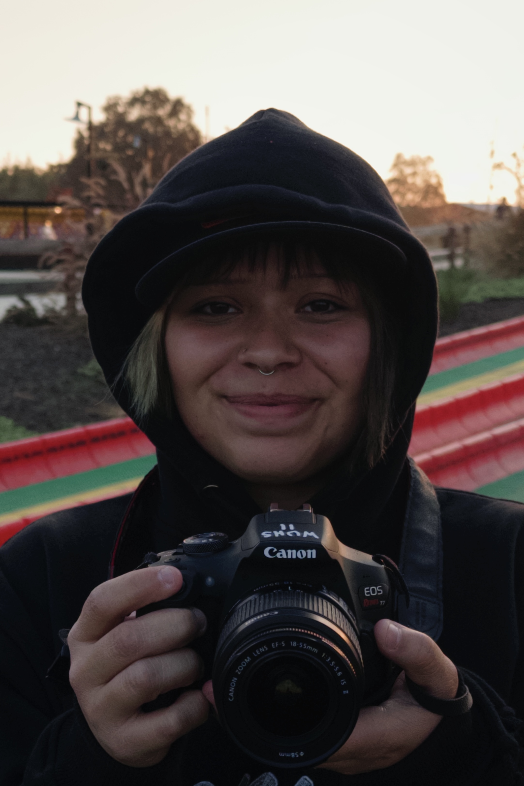
Sensamia
The Big Steppa
Fastest Employee Stair Climber

Logan
The Dozer
Could Probably Take a Comfortable Nap in Our Storage Area
Liam B.
7 People in a Trench Coat
Would Be Able to Operate the Whole Department Alone
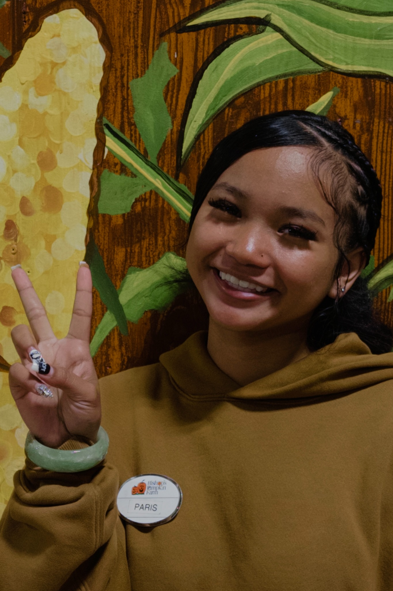
Paris
The Human Projectile
Most Likely to Ride Down the Raceway the Fastest
Kyle
OSHA's Most Wanted
Most Likely to Trip Over a Tube

Max
The Professional Pointer
Fastest Director/Ticket Taker

Guadalupe
The Cannon
Most Likely to Push a Customer the Hardest
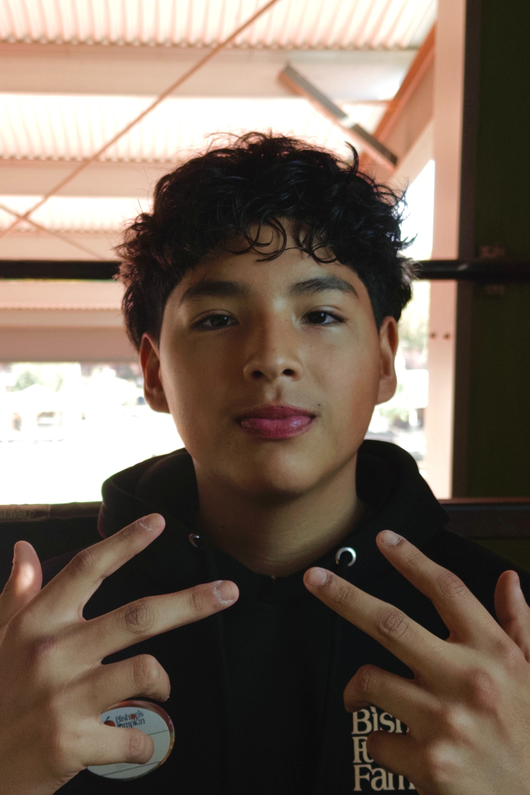
Liam V.

Connor
The Clean Machine
Most Well Organized and Clean
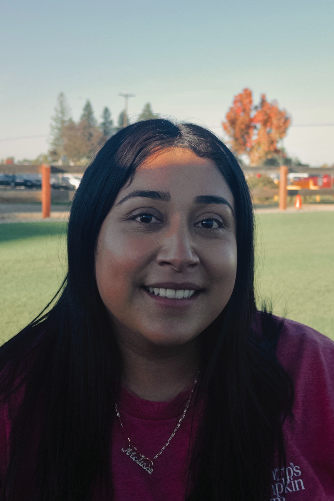
Melissa
The Reason Maintenance Knows Us All by Name
Most Likely to Break Our Conveyor
Jillian
Elyas
The Unpaid Intern
Who's Most Likely to Be Spotted Still Working After Clocking Out?
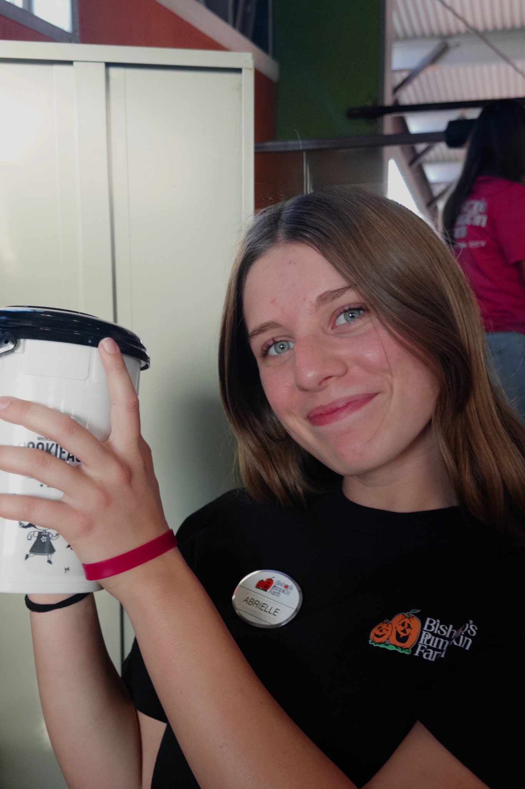
Abrielle
Max
Liam B.
The Personality
Most Likely to Make a Boring Shift Interesting
Max
The Lane 6 Landlord
Most Likely to Call Dibs on Lane 6
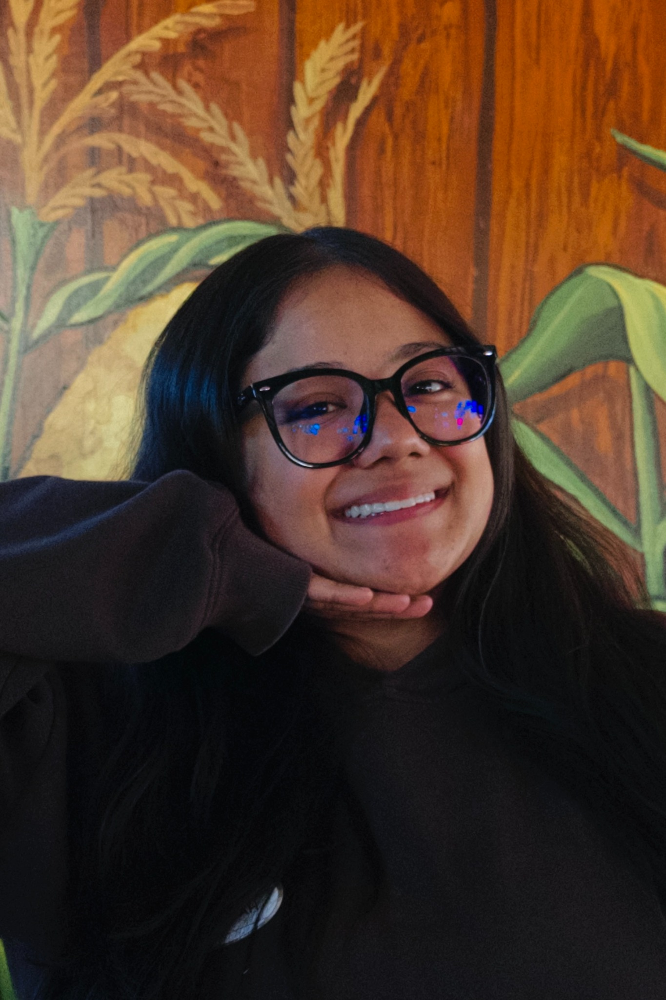
Andreah
The Overnight Security
Most Likely to Survive 24 Hours at the Raceway
Max
The One-Person Podcast
Most Likely to Have an Entire Conversation With Themselves Over the Walkie
Abrielle
The Concussion
Most Likely to Get Hit by a Tube Working Conveyor
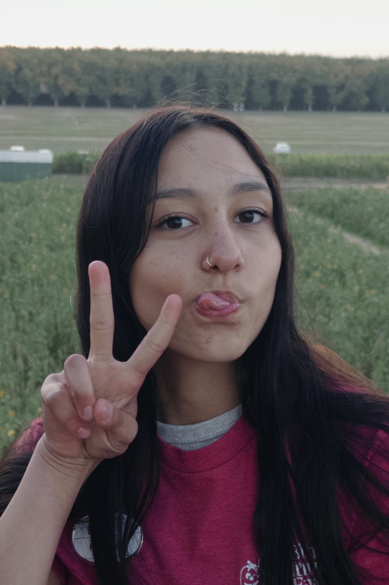
Kailyn
The Alumni
Always Comes Even Though They Don't Work Here Anymore
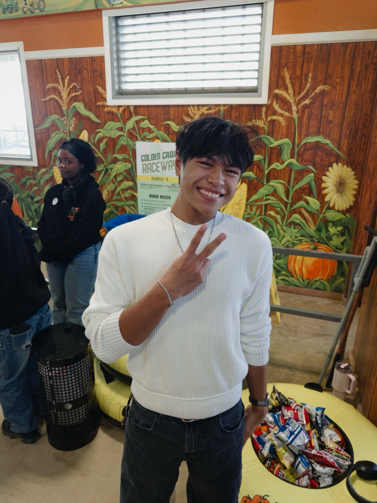